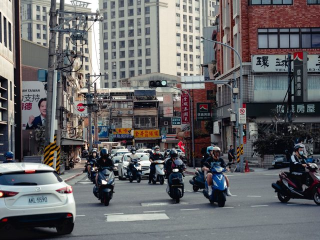

VOCABULARY · 主題 2000 字 UNIT 18
Transportation．交通
交通工具、路上的地點、和交通有關的動詞與形容詞，共 27 個字。注意 by bus、on foot 的說法，以及 drive、fly、ride 的過去式。
共 27 個單字．點 🔊 聽發音
1airplanen.
飛機
= plane；英式 aeroplane
The airplane is taking off.飛機正在起飛。

2bicyclen.
腳踏車
= bike
I ride my bicycle to the park.我騎腳踏車去公園。

3boatn.
小船
We took a boat to the small island.我們搭船去那座小島。

4busn.
公車
複數 buses
I take the bus to school every day.我每天搭公車上學。

5carn.
汽車
Dad washes his car on Sundays.爸爸星期天洗他的車。

6motorcyclen.
摩托車
My uncle rides a motorcycle to work.我叔叔騎摩托車上班。

7scootern.
輕型機車；滑板車
Many people in Taiwan ride scooters.台灣有很多人騎機車。

8shipn.
船；大船
比 boat 大
The big ship sailed across the ocean.那艘大船航行過了海洋。
9taxin.
計程車
複數 taxis；take a taxi 搭計程車
We took a taxi to the hotel.我們搭計程車去飯店。

10trainn.
火車；列車
by train 搭火車
The train to Kaohsiung leaves at nine.開往高雄的火車九點出發。

11truckn.
卡車；貨車
A big truck is carrying sand.一輛大卡車正在載沙子。
12airportn.
機場
air + port
We got to the airport two hours early.我們提早兩個小時到機場。
13stationn.
車站；局；台
train station 火車站；MRT station 捷運站
Let's meet at the train station.我們在火車站見面吧。

14blockn.
街區；積木；大塊
two blocks away 隔兩個路口
The bookstore is two blocks away.書店在兩個路口外。

15bridgen.
橋
We walked across the bridge.我們走過了那座橋。

16sidewalkn.
人行道
英式 pavement
Please walk on the sidewalk.請走在人行道上。

17trafficn.
交通；車流
不可數；traffic light 紅綠燈
There is a lot of traffic in the morning.早上車很多。

18arrivev.
到達；抵達
arrive at（小地點）／arrive in（城市、國家）
Our train arrived on time.我們的火車準時到達。

19crossv.
越過；穿過
cross the road 過馬路
Hold my hand when we cross the road.我們過馬路時牽著我的手。

20drivev.
開車；駕駛
drive – drove – driven
My mom drives me to school.我媽媽開車送我上學。
21flyv./n.
飛；搭飛機；蒼蠅
fly – flew – flown
We will fly to Japan next week.我們下週要搭飛機去日本。

22landv./n.
降落；上岸；陸地
The plane will land in ten minutes.飛機再十分鐘就要降落了。
23ridev.
騎；搭乘
ride – rode – ridden
My little sister is learning to ride a bike.我妹妹正在學騎腳踏車。

24turnv./n.
轉彎；輪流
turn left／right；It's your turn. 輪到你了
Turn right at the traffic light.在紅綠燈右轉。
25fastadj./adv.
快的；快地
速度快；形容詞和副詞同形（沒有 fastly）
Cheetahs can run very fast.獵豹可以跑得非常快。

26quickadj.
快的；迅速的
動作快；副詞 quickly
I had a quick breakfast and ran to school.我很快吃完早餐就跑去上學。

27slowadj.
慢的
副詞 slowly
Turtles are slow animals.烏龜是動作很慢的動物。
FOCUS
怎麼去？交通方式的說法
| 說法 | 中文 | 例句 |
|---|---|---|
| by bus / by train / by car | 搭公車／火車／汽車 | I go to school by bus. |
| by plane / by taxi / by bike | 搭飛機／計程車／騎腳踏車 | We went to Japan by plane. |
| on foot | 走路 | My grandpa goes to the park on foot. |
| take a bus / take a taxi | 搭公車／搭計程車 | Let's take a taxi. |
| ride a bike / a scooter / a horse | 騎腳踏車／機車／馬 | Can you ride a horse? |
| drive a car | 開車 | My mom drives a car to work. |
by 後面直接接交通工具，不加 a、the：by bus（不是 by a bus）。走路是 on foot，不是 by foot。
FOCUS
交通動詞的三態
| 原形 | 過去式 | 過去分詞 |
|---|---|---|
| drive 開車 | drove | driven |
| fly 飛 | flew | flown |
| ride 騎 | rode | ridden |
| arrive 到達 | arrived | arrived |
| cross 越過 | crossed | crossed |
| land 降落 | landed | landed |
現在分詞：drive → driving、ride → riding（去 e 加 -ing）；fly → flying。
FOCUS
fast、quick、slow 怎麼用
| 單字 | 意思 | 例句 |
|---|---|---|
| fast | 速度快（形容詞、副詞同形） | He is a fast runner. He runs fast. |
| quick → quickly | 動作迅速 | Come here quickly! |
| slow → slowly | 慢 | Please speak slowly. |
| soon | 時間上很快、不久 | See you soon. |
fast 當副詞不加 -ly，沒有 fastly 這個字。